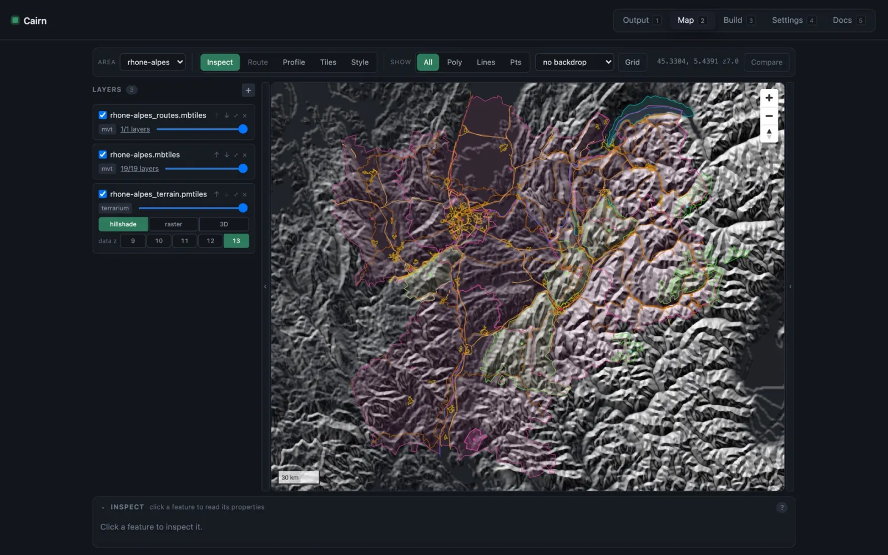
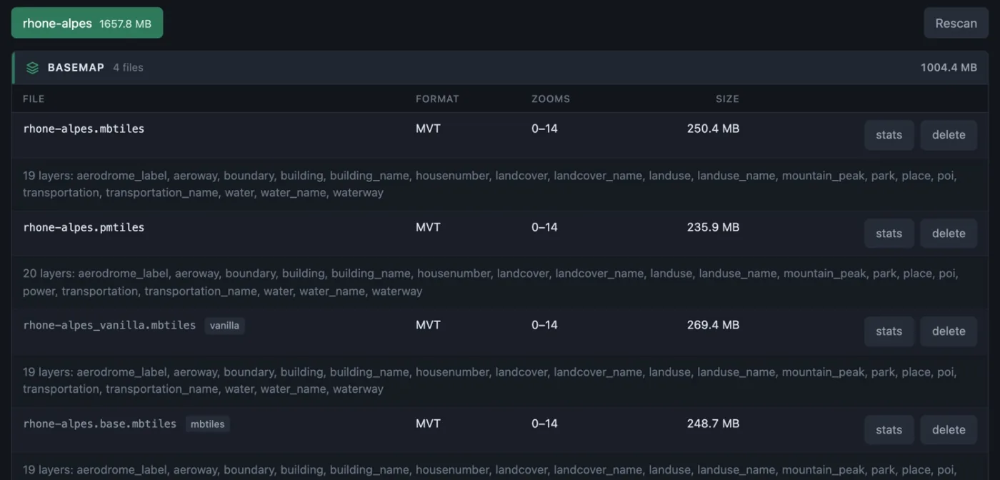
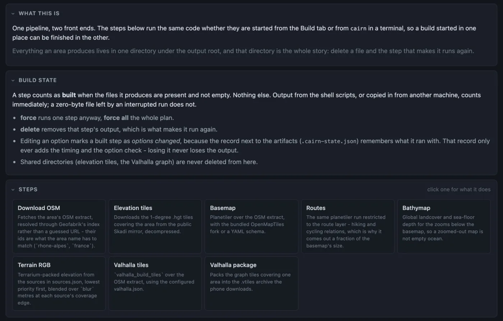
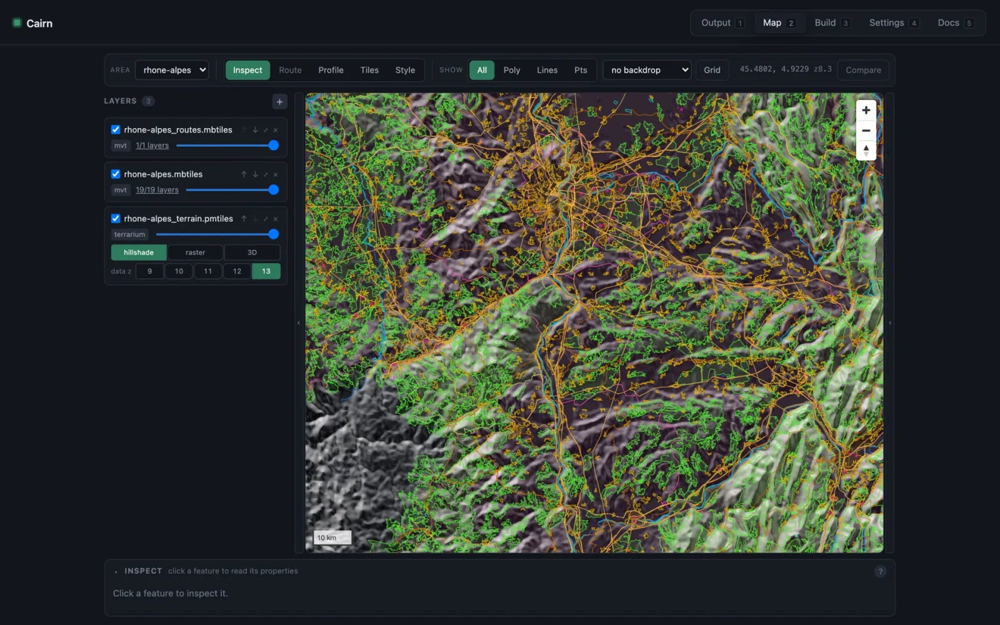
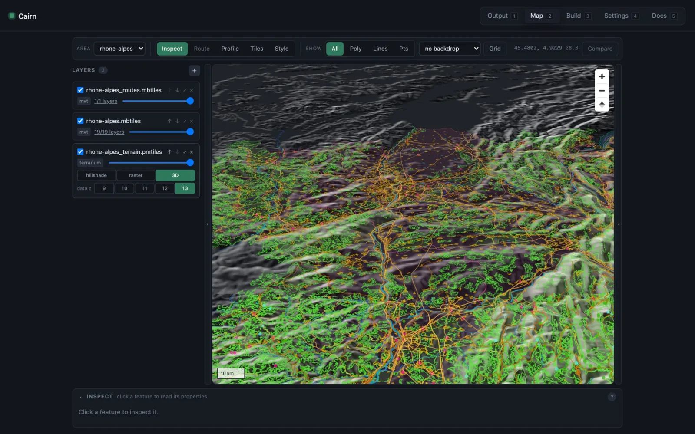

Vector basemap
OpenMapTiles-schema vector tiles from z0 to z14: roads, water, landcover, buildings, places and POIs.
MVT · z0–14Open source MIT licensed · macOS and Linux
Cairn turns OpenStreetMap into everything a map app needs to work without a connection: vector basemap, hiking and cycling routes, terrain and a routing package. For any area Geofabrik publishes. One desktop app, one command line, one Rust pipeline.
Or from a terminal: cairn basemap --area rhone-alpes · Needs Java 21+ for the planetiler steps, and the app can fetch a JRE for you.

What it builds
Pick an area, and Cairn produces the archives a map app needs: tiles for drawing, routes for hiking and cycling, elevation for relief and 3D, and a graph for turn-by-turn routing.
OpenMapTiles-schema vector tiles from z0 to z14: roads, water, landcover, buildings, places and POIs.
MVT · z0–14Route relations in their own archive, so they ship and update separately, and come out a fraction of the basemap's size.
MVT · route layerElevation packed into tile pixels, for shaded relief and 3D terrain in any renderer that reads terrain-RGB.
terrain-RGBThe routing graph for the area, with elevation baked in, packed into a single file you can ship to a phone.
Valhalla · elevation includedOrdinary formats, no lock-in. Outputs are plain MBTiles, PMTiles and Valhalla, so they work with
tileserver-glQGISMapLibreand anything else that reads themPipeline
Every step knows what it needs. Select only the package and its prerequisites run first, in order. Anything already built is skipped.
Select a step to see what Cairn runs for it:
Selecting Valhalla package runs 4 steps, in order: Download OSM → Elevation tiles → Valhalla tiles → Valhalla package
Features
Use the desktop app when you want to see what's happening, the command line when you want to script it. Both run exactly the same code.
The Tauri app is a front end to the pipeline. Choose any Geofabrik area, tick the outputs you want, and Cairn plans the rest.

cairn runs the same steps with the same defaults as the app. Start a build in one, finish it in the other.
cairn options basemap documents every flag, with what it costs
Each planetiler step ships two presets: measured, the default, and stock, planetiler's own defaults kept as a comparison baseline. Override anything with -o key=value.
Every flag was measured on a real rhone-alpes build, and cairn options tells you what each one buys and what it costs.
default · --preset measured
--preset stock
cairn basemap --area $AREA -o transportation_surface_detail=falseA built-in map reads the generated archives straight from disk. Layer them, flip between hillshade, raster and 3D terrain, and route live against the package you just made.


A terrain-RGB renderer with no GDAL or PROJ, a Valhalla packager, and in-process routing through the Valhalla library. No prime_server, no zmq.
Any area Geofabrik publishes, by its id: rhone-alpes, france. Steps clip to the area's own boundary, or pass --poly-shape to clip to your own.
cairn state --area $AREA reports which outputs exist. Delete a file, or clear a step, and only the step that makes it runs again.
Elevation tiles and the Valhalla graph are shared between areas. Build the graph once for a parent area and routes don't stop at a border.
Measured
Numbers from real builds of rhone-alpes, compared against planetiler and the reference scripts.
The measured preset shrinks the rhone-alpes basemap by 11.7% compared with planetiler's defaults.
The same preset shrinks the rhone-alpes routes archive by 19.4% against planetiler's defaults.
From identical input, the Rust packager produced 212.9 MiB where the reference script produced 219.0 MiB.
At z13 the terrain renderer matches the reference archive: mean |Δ| 0.0 m, worst case 1 m, which is one quantisation step.
In-process routing from Grenoble to Chambéry, no server involved. Routed in 0.08 s.
All figures measured on a rhone-alpes build.
Command line
Everything the app does is a cairn subcommand. Run them in order, or run only the last one and let the dependencies fill in.
# one area, start to finish$ export AREA=rhone-alpes$ cairn download --area $AREA # OSM extract from Geofabrik$ cairn basemap --area $AREA # vector basemap$ cairn routes --area $AREA # route relations$ cairn elevation --area $AREA # .hgt tiles$ cairn terrain --area $AREA # terrain-RGB$ cairn valhalla-tiles --area $AREA # routing graph$ cairn package --area $AREA # Valhalla package # what's built, and what every flag costs$ cairn state --area $AREA$ cairn options basemap --presets$ cairn basemap --area $AREA -o transportation_surface_detail=falsecairn options <step> lists every flag with what it costs. --presets adds the option sets that ship.cairn state --area $AREA shows which outputs exist, and … clear <step> removes one..poly from Geofabrik the first time it needs it.cairn catalog lists the areas you've generated and their files. cairn route routes between points using a package, and cairn profile samples an elevation profile along a line.Download
Grab the app, or just the command line. Every download lives on the latest GitHub release.
The desktop app, as a disk image.
The desktop app as a portable AppImage or a native package.
The standalone cairn command line, for servers and scripts. No app needed.
Builds target macOS and Linux today. Windows has not been released.
$ git clone --recurse-submodules https://github.com/Akylas/cairn$ cd cairn$ npm install && npm run tauri devFAQ
Cairn itself is MIT licensed. The map data it processes is OpenStreetMap, available under the Open Database Licence (ODbL), which requires attribution. If you publish tiles built with Cairn, credit © OpenStreetMap contributors.
Elevation and other sources you configure have their own terms, so check those for the ones you use.
To build, yes, for the downloads: the OSM extract, elevation tiles, the planetiler jar and the Valhalla graph are fetched per area. Once the outputs exist they are plain files, and a map app can use them with no connection at all.
It depends on the area and on your options. For reference, the rhone-alpes basemap is about 250 MB. cairn options lists what each flag costs, so you can trade detail for size.
Planetiler still builds the vector tiles. Cairn wraps it with tuned, measured presets, and covers the rest of the job: elevation, terrain-RGB and the Valhalla routing package. It plans the steps from their dependencies, clips each to the area's boundary, remembers what's built, and gives you a desktop app with live progress and a map to inspect the result.
Not yet. The CI builds the app and CLI for macOS and for Linux (Ubuntu 22.04 as the baseline). Windows is left out on purpose: Valhalla's support for it is poor and this pipeline has never been run there. Windows is not released.